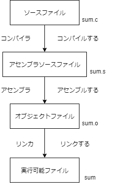
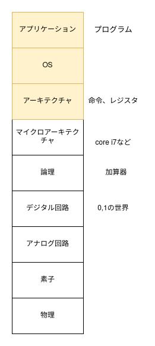

アセンブリを読む
- ここでは、Cで書かれた簡単なプログラムが実行される過程を通して、低レイヤの様々な概念を学びます。
低レイヤとは
- まずはこれから学ぶ範囲のイメージを持ってもらおうと思います。
- 低レイヤとはどのレイヤを指すのでしょうか？はじめに、ソースコードが実行されるまでという観点から見てみます。

- この図で私たちがこれから学ぶのはアセンブラソースファイルと実行可能ファイルのところです。
- では、OSやアプリケーションといった広い枠組みで観るとどうでしょうか。(「ディジタル回路設計とコンピュータ・アーキテクチャ」より、一部変更した図を引用しています。)

- 私たちがこれから学ぶのは黄色の部分なので、あまり低くない感じがしますね。
- 「ソフトウェアレイヤから見ると」低レイヤを学んでいくんだな、ということがわかれば大丈夫です。
簡単なプログラムが実行されるまでを見ていく
- ここで説明すること
- アセンブリ
- レジスタ
- メモリのスタック構造
- 以下のC言語でかかれたファイルを実行してみましょう。
#include <stdio.h>
int main(void) {
int a = 1;
int b = 10;
printf("sum is %d\n", a+b);
return 0;
}
- command
$ gcc main.c
$ ./a.out
# sum is 11 と表示される
- 以下の図のように、実行ファイル(ここでのa.out)が作られるまでにはいくつかの工程があります。ここではC言語に限らず一般的な仕組みを説明します。

- C(gcc)で中間表現に当たるところはマクロを展開したあとなどが入るかもしれないですが、今回はそこは扱わないのでアセンブリを見ていきましょう。
- アセンブリを出力してみます。出力の仕方は2つあって、ひとつはソースコードからアセンブリを出力する方法、もうひとつは実行可能ファイルからアセンブリを復元する(ディスアセンブルといいます)方法です。
- どちらもやってみましょう。
- まずはソースコードからアセンブリを出力します。
$ gcc -S main.c
main.sというファイルができたと思います。
.file "main.c"
.text
.section .rodata
.LC0:
.string "sum is %d\n"
.text
.globl main
.type main, @function
main:
.LFB0:
.cfi_startproc
endbr64
pushq %rbp
.cfi_def_cfa_offset 16
.cfi_offset 6, -16
movq %rsp, %rbp
.cfi_def_cfa_register 6
subq $16, %rsp
movl $1, -8(%rbp)
movl $10, -4(%rbp)
movl -8(%rbp), %edx
movl -4(%rbp), %eax
addl %edx, %eax
movl %eax, %esi
leaq .LC0(%rip), %rdi
movl $0, %eax
call printf@PLT
movl $0, %eax
leave
.cfi_def_cfa 7, 8
ret
.cfi_endproc
.LFE0:
.size main, .-main
.ident "GCC: (Ubuntu 9.3.0-17ubuntu1~20.04) 9.3.0"
.section .note.GNU-stack,"",@progbits
.section .note.gnu.property,"a"
.align 8
.long 1f - 0f
.long 4f - 1f
.long 5
0:
.string "GNU"
1:
.align 8
.long 0xc0000002
.long 3f - 2f
2:
.long 0x3
3:
.align 8
4:
- 次にディスアセンブルしてみます。
objdumpコマンドの結果をみてみます
objdump -d -Mintel a.out > disas.txt
disas.txtは以下のようになります。
0000000000001149 <main>:
1149: f3 0f 1e fa endbr64
114d: 55 push rbp
114e: 48 89 e5 mov rbp,rsp
1151: 48 83 ec 10 sub rsp,0x10
1155: c7 45 f8 01 00 00 00 mov DWORD PTR [rbp-0x8],0x1
115c: c7 45 fc 0a 00 00 00 mov DWORD PTR [rbp-0x4],0xa
1163: 8b 55 f8 mov edx,DWORD PTR [rbp-0x8]
1166: 8b 45 fc mov eax,DWORD PTR [rbp-0x4]
1169: 01 d0 add eax,edx
116b: 89 c6 mov esi,eax
116d: 48 8d 3d 90 0e 00 00 lea rdi,[rip+0xe90] # 2004 <_IO_stdin_used+0x4>
1174: b8 00 00 00 00 mov eax,0x0
1179: e8 d2 fe ff ff call 1050 <printf@plt>
117e: b8 00 00 00 00 mov eax,0x0
1183: c9 leave
1184: c3 ret
1185: 66 2e 0f 1f 84 00 00 nop WORD PTR cs:[rax+rax*1+0x0]
118c: 00 00 00
118f: 90 nop
- 見比べてみると、同じものを見ているはずなのに違うことに気づくでしょうか。
- AT&T記法とintel記法の違い
- 今回はintel記法で、かつ
.cfi_のようなデバッグ情報を消していきたいので以下のコマンドで行います -fno-asynchronous-unwind-tablesでデバッグ情報を消し、-masm=intelでintel記法にしています。
$ gcc -fno-asynchronous-unwind-tables -masm=intel -S main.c -o main.s
- これでようやく今回見ていくアセンブリができました。
.file "main.c"
.intel_syntax noprefix
.text
.section .rodata
.LC0:
.string "sum is %d\n"
.text
.globl main
.type main, @function
main:
endbr64
push rbp
mov rbp, rsp
sub rsp, 16
mov DWORD PTR -8[rbp], 1
mov DWORD PTR -4[rbp], 10
mov edx, DWORD .LC0:PTR -8[rbp]
mov eax, DWORD PTR -4[rbp]
add eax, edx
mov esi, eax
lea rdi, .LC0[rip]
mov eax, 0
call printf@PLT
mov eax, 0
leave
ret
.size main, .-main
.ident "GCC: (Ubuntu 9.3.0-17ubuntu1~20.04) 9.3.0"
.section .note.GNU-stack,"",@progbits
.section .note.gnu.property,"a"
.align 8
.long 1f - 0f
.long 4f - 1f
.long 5
0:
.string "GNU"
1:
.align 8
.long 0xc0000002
.long 3f - 2f
2:
.long 0x3
3:
.align 8
4:
- no directiveにするとデバッグ用のdirectiveが消えてきれいに見えるようになります。(directiveとは、GNU assemblerに対する命令で、機械語にするときに使われて、CPUアーキテクチャとは関係がない。 https://sourceware.org/binutils/docs/as/Pseudo-Ops.html#Pseudo-Ops で調べることができます。)
- いろいろみえますが、以下の要素から成立しています
<Mnemonic> <destination>, <source>- mov
- mov, lea
- add
- push, pop
- レジスタの説明
- メモリレイアウト、スタックの説明
ABIの説明
全体を通してもう一度見てみる